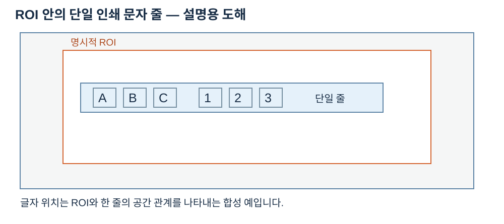

OCR 영역과 좌표
OcrRegionSpec의 roi는 입력 이미지 내부의 비어 있지 않은 사각형, quarter_turns는 0–3인 90도 회전 횟수입니다. light_text는 밝은 문자를 어두운 문자로 반전하고 normalize는 대비 범위를 확장합니다. 대비는 원본 ROI의 (최대−최소)/255입니다. 회전된 전처리 영상의 테두리 좌표는 결과의 변환을 통해 입력 로컬 또는 원본 글로벌 좌표로 되돌립니다. 결과 텍스트 및 문자 모서리와 상태를 함께 기록하세요.


판독 기준
- 합성 배치이며 실제 OCR 판독 결과가 아닙니다.
- 기본 read_text는 지정 영역을 단일 줄로 읽습니다.
수치와 도형은 연결된 계약의 핵심 관계를 설명하는 예입니다. 실제 SDK 출력으로 명시한 자료를 제외하면 실행 결과나 장비 실측으로 해석하지 않습니다. 좌표계·입력 형식·수명과 오류 조건은 관련 API 계약을 확인한 뒤 적용하세요.
OCR의 roi는 전달한 이미지에서 지정한 사각형이며 폭과 높이가 양수이고 이미지 범위를 벗어나면 안 됩니다. quarter_turns는 0부터 3까지의 90도 회전 횟수입니다. 예를 들어 폭 4, 높이 2인 영역을 한 번 회전하면 전처리 영상의 폭과 높이가 교환됩니다. light_text는 밝은 문자를 어두운 문자로 바꾸는 극성 선택이고 normalize는 영역의 밝기 범위를 확장하는 선택입니다.
대비는 회전이나 정규화 이후의 결과가 아니라 원본 ROI에서 최대값과 최소값 차이를 255로 나눈 값입니다. 대비 0인 균일 영역과 임계값 미만의 영역은 결과 상태를 보고 구분합니다. 전처리 영상에서 읽은 문자의 네 모서리는 변환을 거쳐 현재 입력의 local과 원본 기준 global로 전달됩니다. 입력 이미지가 이미 ROI일 때 global에는 그 이미지의 원점이 반영되므로 표시 대상 좌표계를 먼저 정해야 합니다.
원점과 회전의 예
입력 이미지 안의 ROI가 (10,20)에서 시작하고 크기가 4×2인 경우를 생각해 보세요. 회전 전 ROI의 한 점을 원본 입력에 표시하려면 ROI 로컬 위치에 (10,20)을 더해야 합니다. 입력 이미지 자체가 더 큰 원본에서 잘린 영상이라면 그 영상의 원점도 global 변환에 반영됩니다. 따라서 local과 global을 섞어 같은 원점을 두 번 더하지 않도록 결과가 어느 기준인지 확인합니다.
quarter_turns가 1이면 90도 회전하므로 전처리 영상의 크기는 2×4가 됩니다. 모델이 반환하는 문자 모서리는 회전된 영상의 경계에서 입력 local 및 global로 역변환됩니다. 대비는 원본 ROI의 최대−최소를 255로 나눈 값이며 normalize 후의 범위로 다시 계산하는 것이 아닙니다. light_text와 normalize는 입력을 바꾸므로 같은 영상의 결과를 비교할 때 이 설정을 함께 기록합니다.
| 항목 | 입력·설정 | 판독 |
|---|---|---|
| ROI | 원점 (10,20), 4×2 | 입력 기준 |
| 회전 | quarter_turns=1 | 전처리 크기 2×4 |
| 위치 | 전처리 경계 좌표 | local/global 변환 |
| 대비 | 원본 범위 / 255 | 정규화 전 |